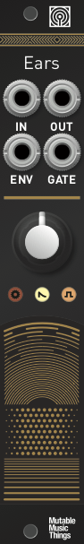

Key data
Contact microphone
| Parameter | Value |
|---|---|
| Width | 4HP |
| Depth | 25mm |
| +12V current | 5mA |
| -12V current | 5mA |
| Lifetime | 09/16 to 03/22 |
| Modulargrid | Link |
Original printed manual
Features
Ears for your modular
- Built-in contact microphone soldered right under the front panel, turning the panel and your entire case into a microphone.
- Increasingly spaced ridges on the panel, generating sonically interesting pulses or impulse combs when rubbed. Strike, pick or scratch digital resonators like Rings, Elements or the 4ms SMR.
- High-quality amplification stage suitable for external contact microphones, electro-acoustic instruments like guitars, or plain line-level signals.
Extending the Mikrophonie
Compared to the Mikrophonie, Ears has additional outputs:
- Envelope follower, translating the decaying amplitude profile of a tap into an envelope CV.
- Gate detector, translating taps into gate signals.
- Envelope follower and gate detector can process external signals.
Specifications
- Audio amplifier with 1M input impedance, up to 40dB of gain.
- External input bypassing the built-in contact microphone.
- Envelope follower with 3 preset attack and release times (adjustable by jumper).
- Gate detector with 3 preset sensitivity levels (adjustable by jumper) and +8V gate output.
- Three indicator LEDs: amplifier clipping (red), envelope follower level (white), gate detector activity (orange).
Revisions and variants
A rare version of the module (30 units) has a different pattern on the panel, meant to be "scratched" with a plectrum.
